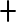

Pattern Text
Create Chart!Stitches
-
-
- ch
-
-
- 
- sc
-
No one has asked any questions yet, but here's where they will go...
- What can I use these charts for?
- What if I want to work offline?
- What are your plans for the future?
How do I use chain-space?
Enter your own pattern and hit the "Create Chart" button! Here are the rules for the pattern text...
- Start with "Row" or "Rnd" followed by a number
- Recognized stitches are : ch, sc, hdc
- Recognized keywords are : turn, skip
Or try loading one of these example swatches:
- Granite stitch
- Griddle stitch
- Simple lace
To reassign the stitch symbols, press the US default or UK default buttons, or press on a given stitch used in the pattern to change the associated symbol.
Why does chain-space exist?
- Because as a crochet pattern designer I wanted an easier way to create charts
- Because as a software engineer I thought this would be a cool project
- Because open-source and free software is awesome!
Here's your chart!